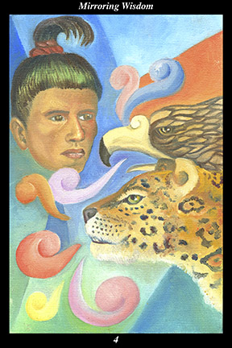

 | IMAGE: A male warrior faces an eagle and a jaguar, who are teaching him the lessons of nature so that he can successfully respond to every circumstance he encounters. The speech glyphs are multi-colored to depict the different dimensions of nature's lessons. |
INTERPRETATION:
The eagle is a symbol of the day, of the masculine force, and represents the direct approach to circumstances. The jaguar is a symbol of the night, of the feminine force, and represents the indirect approach to circumstances. Taken together, they symbolize a balanced and harmonious way of life, meaning that you are able to use both direct action to confront circumstances and indirect action to mature circumstances, tailoring your responses to the need of the time. The male warrior is a symbol of the way of testing and training human nature that increases its versatility and fortitude. The speech of the eagle and jaguar symbolize the lessons that can be learned from the primary forces of nature by those who listen respectfully. Taken together, these symbols mean that you succeed in your fierce determination to train your emotions, thoughts, and will to act in concert to overcome every hardship.
ACTION:
The masculine half of the spirit warrior calls your feminine half to open her heart and feel herself part of a spiritual initiation as old as creation. He calls her to awaken to her innate capacity to change things and to view as a bridge this lifetime across which she journeys. He calls on her to reunite in a higher and more creative unity by complementing his purposeful nature with her own nurturing nature. By combining your dual nature in the right proportions, you can acquire the wisdom of the old ones, who learned from nature both how to adapt to change, as well as how to anticipate it. This is a time for studying the behavior of nature and its relationships in order to better understand the behavior and relationships of human nature and spirit: now is a time when the voice of the great-great-great-grandfather is especially strong, so you can approach him as you would the sky spirit itself and receive the eternal meanings behind all of nature’s symbols. By filling your heart now with the intent to travel the ancient path of wisdom, you can pursue your lifework knowing that you are helping build the road of perfect freedom. Do not doubt that spirit dwells within nature nor that it speaks in a language understood by your heart nor that it leaves tracks in its passing that you may follow.
INTENT:
When loving-kindness is not tempered with strength, people become dependent and resentful, trusting others too much and then growing disillusioned when their own good will is not reciprocated. Become familiar with this pattern of imbalance and learn to recognize its signs of worsening—apathy, helplessness, and desperation—so that you can intervene at the right moment to break the fever, so to speak, by reintroducing the feminine half to its complementary masculine half. Whether you find this imbalance in yourself or others, you can provide a counterbalance to the need arising from a growing sense of being unfulfilled by calling attention to the outer path, the route by which spirit warriors train to prove their immortality by overcoming every mortal obstacle. Following this path toward the outermost horizon, you pass through every ordeal like an ancient tree passing through another season.
SUMMARY:
No matter how well you see when things are as clear as day, the eagle sees better. No matter how well you see when things are as obscure as night, the jaguar sees better. Keep your heart filled with humility so you can keep learning from your spirit guides. Wisdom cannot blossom among the weeds of opinion, arrogance, laziness, and self-satisfaction. Eliminate nervousness, cultivate calm. Work diligently to achieve goals that appear just beyond your reach: the spirit within nature is the same spirit within you.
THE LINE CHANGES
1° The first thing to do in establishing new priorities is to abandon the old ones. This means watching your thoughts, words, and actions to determine how influenced they are by the old priorities. Being aware of this influence is like turning on the light to catch robbers in your house red-handed.
2° Sometimes a crisis is needed to inspire a change of priorities. Someone you count on cannot be counted on, turning your world upside-down. This forces you to find other kinds of relationships that help you adopt new and more constructive priorities—this is the path of the ecstatic life.
3° The priorities can be changed but old habits of emotion cling like barnacles to the hull of a boat. Just because they are under the surface does not mean they are not real. Look where you feel righteous indignation and resentment—scrape these habits off and you will encounter no resistance.
4° You must beware of creating a crisis just when everything is going right. By counting on the wrong person at this time you will betray the confidence of all the others who have placed their trust in you. A slip here will result in a long fall—make others prove they share your new priorities.
5° You carry the weight of your responsibilities well but must still rely on the support and tolerance of close allies to see you through. Your greatness is apparent to all but yourself. Such humility is charming but sometimes appears undignified—your new priorities show you what you serve.
6° When your new priorities are fully implemented, everything in the world is nourishing. Everything teaches you about the invisible half of nature—and its invisible connections of cause-and-effect that underlie change. You become a source of great comfort, advice, and nourishment to all you touch.